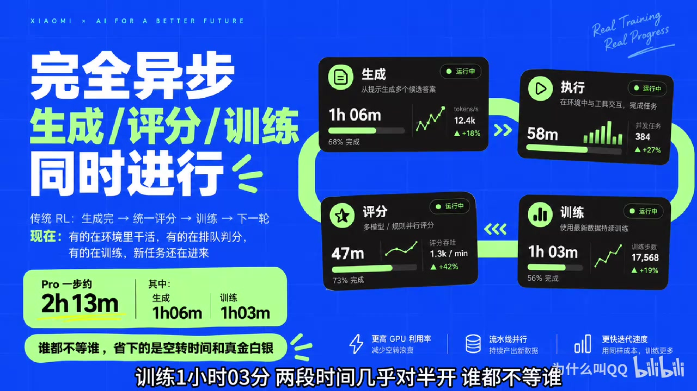
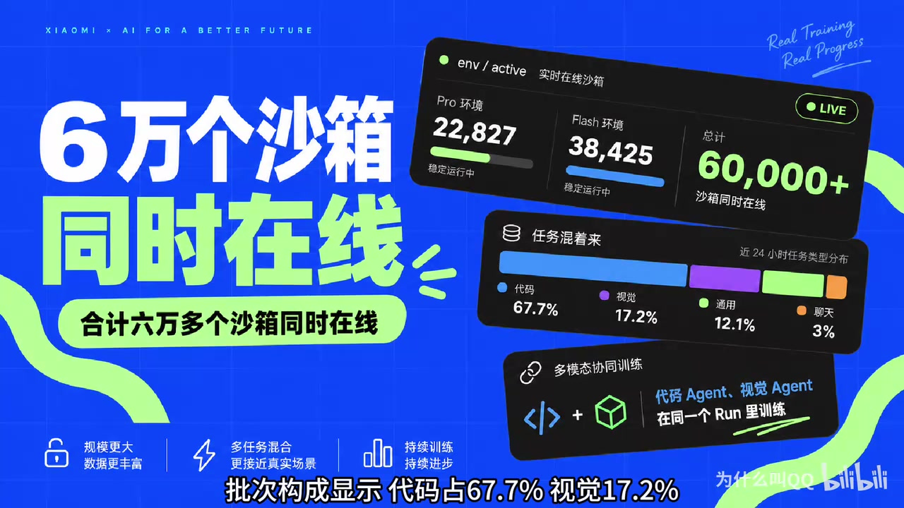
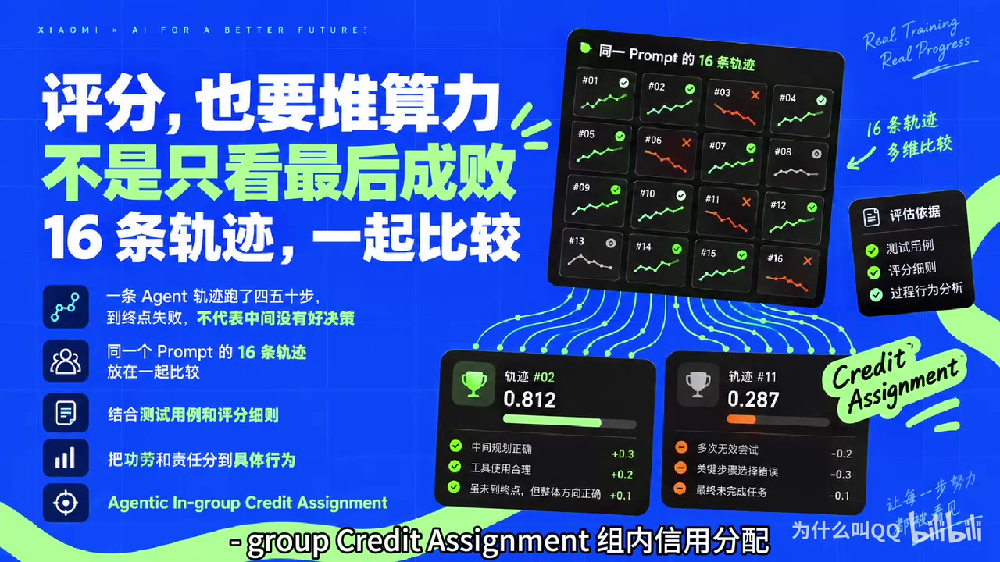
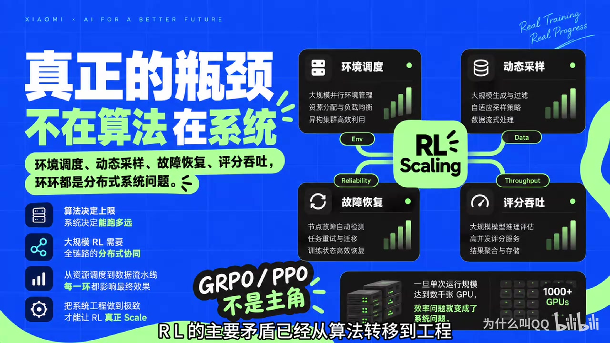

原视频讲述 · 第 1 部分
00:00大家好，我是为什么叫 qq 训练大模型烧钱，然后都被全体网友在线围观是一种什么体验9月17日凌晨，小米 MiMo 团队负责人罗福利发了一条推文，内容很短，半年沉默。只研究一个问题，强化学习到底能扩展到多远？然后他贴了一个链接，米 mo 点 X O 米点 com 斜杠 R L 点进去的人发现小米把米 V2.6的强化学习训练过程做成了一张实时仪表盘。花了多少钱？跑到第几步？奖励曲线涨没涨？哪台机器显存炸了？全部公开开放权重的建过，开放数据的建过开放训练过程呢？这是头一回。
00:40这条推文两天内被看了270万次。先交代背景，罗弗利以前 deep v 2核心成员，去年11月加入小米接手米 O 团队，他到港后36天就把米 O 从 V 2迭代到 V2.5，今年4月开源 V2.5之后，这个团队安静了快半年。这次的推文给了答案，他们只研究一个问题，2L 还能 scale 多远？推文里列了三个扩展方向计算每部约20亿 token，完全异步环境和框架多任务 agent 的二要混在一个 run 例评分算力组内信用分配加测试用例和评分细则奖励。他还承诺未来几周逐步开源。
01:18细节再看最刺激的数字钱，截至我们截稿，两条训练线合计已经花了187万美元，pro 现128万，flash 现59万，而且数字还在跳。有人算过一笔账，开讯36小时烧掉108万美元，平均每小时3万美元，折合人民币21万上下。什么概念？你盯着页面看，一分钟400块人民币就没了。按这个速度推算，每天约74万美元，两条线各再跑100步，还要再砸680万美元，再换算成单价 pro 每百万 token 训练成本约36美元，flash 约8美元，换成推理价格还能再便宜30到50倍。
01:59记住，这只是一次21后训练的开销，与训练另算钱花到哪去了？第一个去向，算力页面显示每个训练部处理约20亿 token，配置是1568个的，每个 prompt 生成16条，roll out 一轮就是25000条轨迹，要注意 agent 的任务的 roout 远不止一问一答，模型要在环境里连续跑几十轮思考。调工具，看报错再改代码。页面上写的清楚，平均交互轮数51到60轮，平均上下文长度9万到13万。Token 单步20亿 token 就是这么堆出来的。截至截稿，pro 累计吃了349亿 token，flash 吃了619亿。
02:40第二个关键点，完全异步。传统二 L 像一条整齐的流水线，先生盛完所有样本，再统一评分，再训练，再进入下一轮，中间全是等待小米这套系统里生成执行评分。训练同时进行，有的 agent 还在环境里干活，有的在排队判分，有的在算奖励，新任务还在不断进来。页面上的耗时拆分很直观，pro 1步2小时13分，其中生成1小时六分，训练1小时三分，两段时间几乎对半开，谁都不等谁，省下来的空转时间就是实打十的钱。再看3，这个指标组动态采样逻辑很反直觉，同一道题模型做16次，16次全对或者16次全错，这道题对训练都没有价值。

03:24全对说明太简单，全错说明太难，两种情况都算不出有效的梯度信号。页面上全错率12.9%，全对率26.3%。动态采样器的工作就是把这批题扔掉，换新题进来，直到凑满1568道有区分度的题，这一步训练才开始。你在费得流里看到的 accep 的1568分之2096就是这个凑数过程多彩的五百多道全是被丢弃的沉没成本。第三个扩展方向，环境页面上有个数字 f active 活跃环境数，pro 线22000，flash 线38000，加起来六万多个沙箱。同时在线任务类型混着来，批次构成显示代码占67.7%，视觉17.2%，通用任务12.1%，聊天3%。

04:13代码 agent 开终端改代码跑测试，视觉 agent 用另一套工具，他们在同一个乱里训练。总结下瓶颈不再堆卡，在于把环境工具链评分系统一起放大。第四个看点评分一条 agent 的轨迹跑了四五十步到终点却失败了，问题出在哪一步？是第十二步改错了文件，还是第30步误读了报错，只看最终结果，模型永远不知道。小米的方案叫 agtic in group credit assignment 组内信用分配同一个 prompt 的16条轨迹放在一起比较，结合测试用例和评分细则，把功劳和责任分到具体行为上。

原视频讲述 · 第 2 部分
04:49具体算法还没公开，但方向很清楚，给打分这件事本身也对上算力。这个页面对工程师最友好的部分是18个核心指标全部可见，挑几个说说。Critic reverse mean 记录平均奖励 P G 下划线 loss 是策略梯度损失，两条曲线配合看就知道更新有没有起效 Entrop loss 监控探索程度太迪，说明模型不敢视新路子了 norm 监控训练稳定性突然飙升，往往预示要崩 training df 下面的 kl 监控训练引擎和推理引擎的输出分布差差太大。说明两边数值没对齐，算出来的梯度是歪的。
05:29还有 partial f stiness 超长轨迹会被切片跨步训练这个数记录样本落后了几步，系统用截段重要性采样校正，做训练的同学看到这些名词会心跳加速。最魔幻的是公告栏一个节点显存出问题，重启训练集群和评分服务之间网络断了，重启 flash 线有一种基础设施错误，3个小时没被检测到。从第15步重跑，他们甚至在 pro 线的 roller 的日志里发现网络安全数据集出现坏模式，直接把这个数据集撤了，下架页面还专门加了一行注释。重启后的第一个训练部批次构成反映的是消费前的样本池，看数据的时候别误读这种细节，只有真跑过大训练的人才写得出来这些内容在其他实验室都是内部事故报告，小米直接贴出来。
06:17围观群众的心态也很微妙，一半在学技术，一半在看热闹，看到这里，你可能会想，别的实验室敢不敢这么干？黑客上这个帖子拿了535个赞，高赞评论说这是极度保密，行业里罕见。透明，也有人分析 OpenAI 和 anthro 不敢跟因为训练时长 token 亮步素全公开，竞争对手就能反推出模型规模和算力加底，还有人猜小米公开过程顺手也堵住了蒸馏质疑的嘴。页面底部有一行小字，open is what we value.这句口号放在这个页面上，说服力拉满。还有工程师问了一个尖锐问题，边训练边跑基准测试算不算变相过拟合？
06:56下面的回答是，只要基准不进，训练数据只做停止标准。污染有限，但全行业都在这么干。说一个主流认知的偏差，过去一年谈21的人都在谈算法，国 O 各种变体。但小米这张仪表盘展示的是另一件事，到了万级沙箱亿级偷 Ken 的规模。二的主要矛盾已经从算法转移到工程环境调度、动态采样、故障恢复、评分吞吐，每一环都是分布式系统问题。Re 的讨论印证了这个判断，有人引用 DeepMind 的研究员的观察，单次训练运行的 GPU 规模超过4000卡，效率就开始打折。瓶颈不在芯片，在系统异步流水线部分，轨迹切片都是冲着这个瓶颈去的。

07:39罗弗利说的三个 scaling 算力环境评分，翻译过来就是经验要够多，场景要够杂，信号要够准，三件事全是系统工程，这件事跟写代码的人有什么关系？如果你在开发 agent 的这套思路，可以直接借用给任务设计可验证的奖励，测试用力优先，同一任务多跑几次，用组内对比提取信号，别只看单次成败，太简单和太难的题都带不来成长，让 agent 的一直做跳一跳够得着的题。Haker news 上有个工程师说他用 mimov 2.5做日常开发，性价比极好，偶尔幻觉打断重来就行。
08:14V 以2.6的代码，成绩还在涨 d pew 基准上 pro 已到65.97，flash 63.86，目前训练还在中断，pro 的奖励分从0.565涨到0.636，flash 从0.514涨到0.615，曲线还在往上走，flash 起点更低，追得更快，两者差距在缩小。罗芙利承诺未来几周逐步开源。技术细节组内信用分配的算法，异步调度的实现都会放出来，参照米7B 和 V 2 flash 的传统论文和代码大概率都会有，到时候这页仪表盘上的每个指标都会有官方解释。Rash 上已经有人在等，说这是今年最值得追更的连续剧。
08:57预训练时代，scaling 的公式是数据、参数、算力。小米这次想证明，强化学习也能变成一台持续扩大规模的机器，从交互、评价到学习，整个循环都能堆资源。账本已经摊开了，每小时3万美元买的是一个答案。你觉得21这条路能扩展到多远？评论区聊聊，觉得这期有收获。一键三连，我是为什么叫 qq 我们下期见。